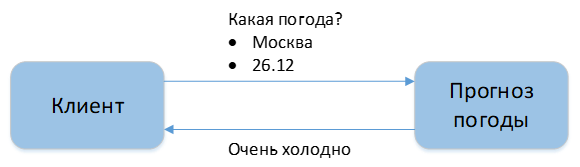

1.3. Архитектурные ограничения
REST определяется ограничениями, и любая коммуникационная архитектура должна им соответствовать. Другими словами, эти архитектурные ограничения делают любой веб-сервис – RESTful.
Принцип 1. Клиент-серверная архитектура
Сама концепция клиент-серверной архитектуры заключается в разделении некоторых зон ответственности: в разделении функций клиента и сервера. Например, мы разделяем нашу систему так, что клиент (допустим, это мобильное приложение) реализует только функциональное взаимодействие с сервером. При этом сервер реализует в себе логику хранения данных, сложные взаимодействия со смежными системами и т.д. [4]
Что мы этим добиваемся и как могло бы быть иначе? Допустим, клиент и сервер у нас объединены. Тогда, если мы говорим о мобильном приложении, каждое мобильное приложение каждого клиента должно было бы быть абсолютно самодостаточной единицей. И тогда, поскольку у нас единого сервера нет для получения/отправки информации, у нас получилась бы какая-то сеть единообразных компонентов – например, мобильные приложения общались бы друг с другом – такая распределённая сеть равноценных узлов. [4]

Рисунок 1. – Клиент-серверная архитектура
Также сервер может иметь базу данных. В данном случае надо понимать, что пара «сервер и БД» тоже будет парой «клиент-сервер». Только в данном случае сервером будет БД, а сам сервер – клиентом.
Рисунок 2. – Трёхзвенная архитектура
Что предлагает архитектура клиент-сервер и зачем она нам нужна?
Прежде всего, архитектура клиент-сервер дает нам определенную масштабируемость: есть один сервер с единой точкой обработки запросов. Если нам нужно нести большую нагрузку, мы можем поставить несколько серверов. Также возможно подключение достаточного количества клиентов (столько, сколько он может обработать). Таким образом, архитектура клиент-сервер обеспечивает масштабируемость.
Во-вторых, REST предлагает определенную простоту поддержки. Если мы хотим изменить логику обработки информации на сервере, мы вносим эти изменения на сервере. Нам не нужно менять каждого клиента.
Конечно, есть и недостатки. В случае архитектуры клиент-сервер мы знаем, что у нас есть единая точка отказа в виде сервера. Если сервер выйдет из строя, а у нас не будет дополнительного экземпляра, это будет означать, что система не будет работать.
Кроме того, поскольку мы переносим часть логики с клиента на сервер, нагрузка потенциально увеличится. Клиент будет выполнять меньше действий самостоятельно, поэтому количество запросов между клиентом и сервером увеличится.
Принцип 2. Stateless
Принцип Stateless заключается в том, что сервер не должен хранить информацию о сессии клиента. Он должен получать всю информацию в каждом обрабатываемом запросе.
Рисунок 3. – Пример реализации принципа Stateless. Запрос погоды на 25.12 в Москве
Предположим, у нас есть несколько метеорологических служб, реализованных в архитектуре клиент-сервер, и мы хотим получить сообщение о прогнозе погоды на завтра.
Как это сделать, если мы работаем с Stateless? Мы отправляем запрос "Какая погода?". Мы отправляем местоположение и дату, на которую мы хотим узнать погоду. В соответствии с этим прогноз погоды отвечает нам – «Будет холодно».
Если я хочу узнать погоду на следующий день, я укажу место, где я хочу узнать погоду, и назову другую дату. Сервер получит этот запрос, обработает его и сообщит мне, что там будет очень холодно.

Рисунок 4. – Пример реализации принципа Stateless. Запрос погоды на 26.12 в Москве
Рассмотрим ситуацию: что было бы, если бы у нас не было Stateless? В этом случае у нас будет Stateful. В этом случае сервер будет хранить информацию о предыдущих запросах клиента, и он будет хранить информацию о сессии, некоторую часть контекста взаимодействия с клиентом. Затем он может использовать эту информацию при обработке следующего запроса.
Рисунок 5. – Пример реализации принципа Stateful
Я все еще хочу узнать, какая погода будет завтра: я посылаю запрос, сервер обрабатывает его, генерирует ответ и, помимо возврата ответа клиенту, сохраняет некоторую информацию (частичную или полную) о полученном запросе. Если я хочу узнать, какая погода будет в течение дня, я могу спросить так: "А что будет завтра?". При этом информация о месте и дате проведения не сообщается.
В этом случае на сервере уже хранится некоторый контекст. Он понимает, что я спрашиваю его о 26-м декабря, и может дать ответ, основываясь на информации, которую он хранит в своей базе данных или кэше. Примером Stateful подхода, который можно встретить в жизни, является FTP-сервер.
Итак, какие же в итоге плюсы нам дает Stateless подход?
• Поскольку системе мониторинга не нужно смотреть дальше одного запроса, чтобы определить его природу, улучшается видимость протокола.
• Легче восстанавливаться после частичных отказов, таких как сбои, поскольку состояние не сохраняется, что повышает надежность.
• Серверу не нужно хранить состояние сессии между запросами, следовательно, повышается масштабируемость, поскольку возможно развертывание служб на любом количестве серверов, а реализация упрощается еще больше.
• Требуется лишь небольшое количество ресурсов, поскольку системе не нужно отслеживать связь по многочисленным линиям, а также информацию о сеансе.
• В протоколах Stateless каждая отдельная коммуникация не связана и отлична от тех, которые идут до или после нее.
• Здесь каждый пакет данных путешествует сам по себе. В этих пакетах нет необходимости ссылаться на другой пакет.
Помимо плюсов Stateless подход также имеет следующие минусы:
• Может потребоваться включение дополнительной информации в каждый запрос, в результате чего серверу придется интерпретировать эту новую информацию.
• Они могут снижать производительность сети за счет увеличения объема повторяющихся данных, передаваемых в серии запросов, которые нельзя сохранить и использовать повторно.
• Они по своей природе менее функциональны, поскольку не хранят информацию о конкретной сессии пользователя.
Принцип 3. Кэширование
В оригинальной статье [1] этот принцип говорит нам о том, что каждый ответ сервера должен иметь пометку о том, может ли он быть кэширован или нет.
Рассмотрим кэширование всё также на примере с сервисом прогноза погоды. Сама погода непосредственно определяется метеостанцией, и далее передается сервису. Итак, при запросе клиента: «Я хочу узнать погоду», если мы запустим сервер и используем кэш или же вообще не будем его использовать, то сервер обратиться к метеостанции, и она вернет ответ. Далее он сохраняет информацию в кэше и отправляет ответ клиенту. При этом, в следующий раз, когда клиент отправит точно такой же запрос, серверу уже не нужно будет связываться с метеостанцией. Он может получить прогноз из кэша и вернуть ответ клиенту.
Рисунок 6. – Пример реализации архитектуры с использованием кэширования
Главным преимуществом кэширования является то¸ что оно не загружает и не хранит все данные вместе, все происходит по требованию. Подходит для случаев, когда вы знаете, что вашему приложению, возможно, не нужно кэшировать все данные из источника данных в определенной категории.
С другой стороны, кэширование имеет и свои проблемы. Во-первых, это заметная задержка в ответе. Это связано с тем, что при пропуске кэша происходит 3 обхода сети. Проверка в кэше, извлечение из базы данных, загрузка данных в кэш. Во-вторых, это проблема устаревших данных, что может стать проблемой. Если данные в базе данных меняются, а срок действия ключа кэша еще не истек, то приложение будет выдавать несвежие данные.
Принцип 4. Единообразие интерфейса. HATEOAS
Hypermedia as the Engine of Application State (HATEOAS) — одно из ограничений REST, согласно которому сервер возвращает не только ресурс, но и его связи с другими ресурсами и действия, которые можно с ним совершить.
HATEOAS позволяет получить в ответе не только информацию об объекте, но и все те действия, которые мы можем с ним совершить. И, если бы у него были бы какие-то важные связанные объекты, мы получили бы ещё и ссылки на них.
Рисунок 7. – Пример ответа с использованием принципа HATEOAS
Получая эти ответы, клиенты сами понимают, какие конкретные действия они могут предпринять в отношении объекта и какую другую информацию они могут получить о связанном объекте. Мы предоставляем клиенту больше свободы в применении информации и действий. Логика клиента становится более гибкой, но и более сложной.
Главное преимущество такого подхода заключается в том, что клиент становится очень гибким по отношению к серверу в плане изменения разрешенных действий, изменения модели данных и т.д.
С другой стороны медали, мы получаем серьезное усложнение логики, в основном на стороне клиента. Это также приводит к усложнению логики на сервере, поскольку эти ответы должны быть сформированы правильно.
Принцип 5. Layered system (слоистая архитектура)
В REST API вызовы и ответы проходят через разные уровни. Как правило, не следует полагать, что клиентское и серверное приложения соединяются друг с другом напрямую. В коммуникационном цикле может быть несколько различных посредников. API REST должны быть разработаны таким образом, чтобы ни клиент, ни сервер не могли определить, с кем они общаются - с конечным приложением или с посредником.
Благодаря многоуровневой архитектуре между клиентом и сервером можно разместить прокси-сервер или балансировщик нагрузки и тем самым улучшить масштабируемость. Добавление безопасности в качестве отдельного слоя повышает безопасность системы. Хотя эти службы участвуют в создании ответа, клиенту не нужно беспокоиться о том, что находится за интерфейсом.
Принцип 6. Code on done (код по требованию)
REST также позволяет расширить функциональность клиента за счет загрузки и выполнения кода в виде апплетов или скриптов. Загруженный код упрощает работу клиентов, уменьшая количество функций, которые должны быть предварительно реализованы. Серверы могут предоставлять часть функций клиенту в виде кода, а клиенту нужно только выполнить этот код.